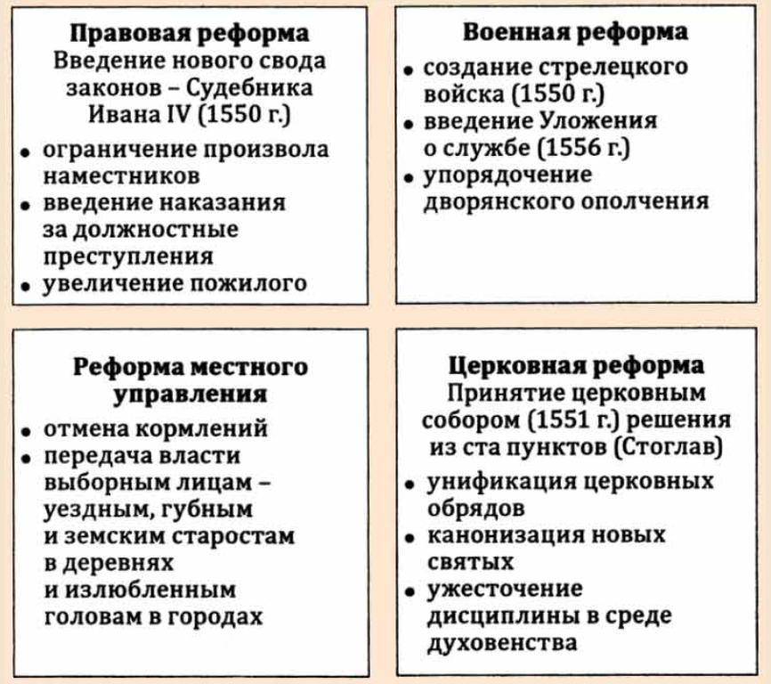
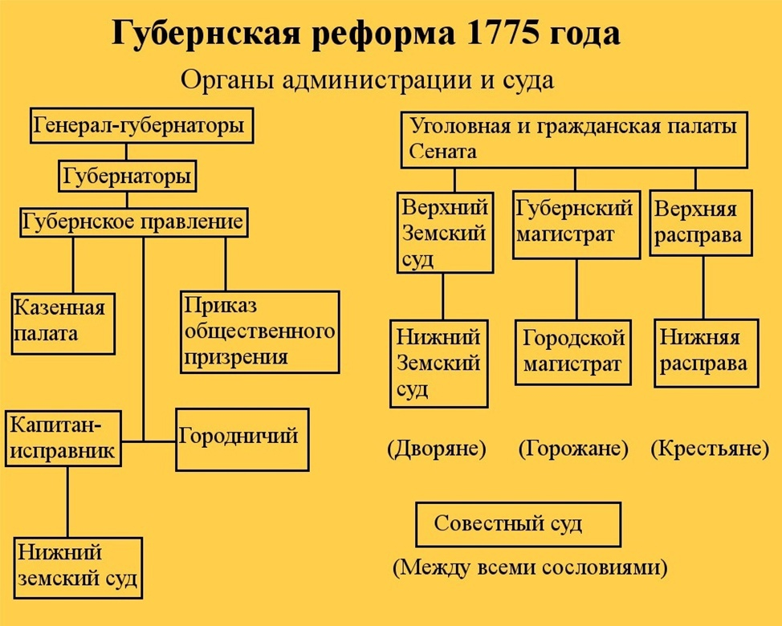
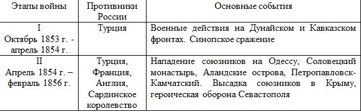
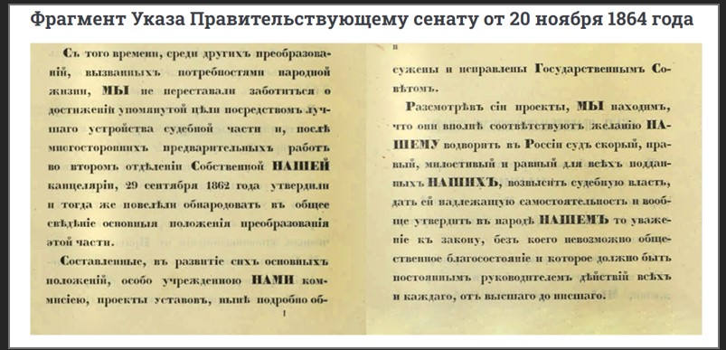
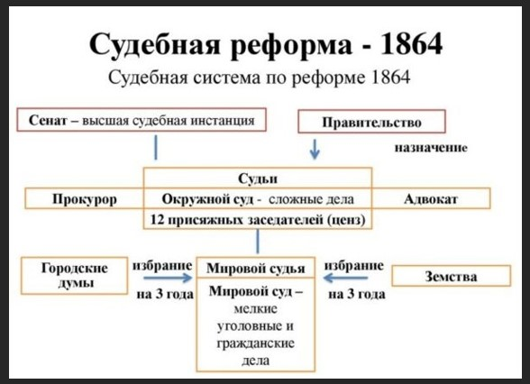
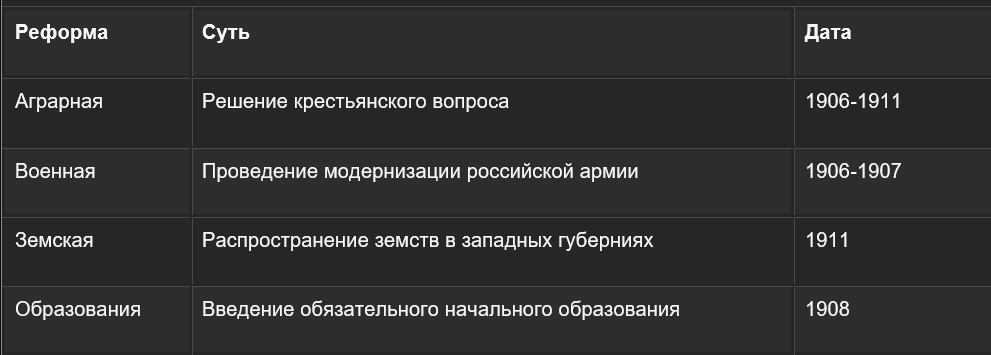

Иван Грозный -> Избранная Рада -> Опричнина -> Иван Грозный
(4 этапа правления Ивана Грозного)
Елена Глинская
Годы правления - 1533–1538
(Никитин сделал скульптуру - реконструкцию черепа Глинской)
Являлась матерью Ивана Грозного
Иван Грозный родился в 1530 году
Иван IV - Маленький сын Василия 3
Василий представляет 7 бояр к Ивану 4
Начинается бойня за место Ивана 4
Елена говорит, что так как она мать - правителем будет она
Правила в очень сложной и напряженной обстановке
Вечные споры за власть
Умирает, возможно, отравили, так как не хотели, чтобы она правила
Становится регентом при малолетнем Иване 4
Провела Денежную реформу
Реформа была очень важна
Была феодальная раздробленность
Москва отныне центр русского государства до Елены
Вроде страна едина, но нет единой денежной формы
Поэтому она ввела серебряный рубль
Также вводит копейку
На копейке изображен всадник с копьем
Поэтому и копейка (от копья)
До сих пор есть копейка с этим медным всадником
Реформа очень важна
Провела унификацию мер
У нас были разные меры длин
Километры, метры, кто-то в аршинах и так далее
Отныне ввелись единые меры длины
Все теперь будет так, как в Москве
Мелочь, но укрепляет государство
Укрепляла стены Москвы (в прямом смысле)
Укрепляла государство физическим методом так же
Укрепила также армию
За пять лет сделала довольно много
Должна запомниться в истории
Боярское правление
После смерти Елены
В боярское правление вмешивается две группы бояр
Шуйские и Бельские
Их было больше, но основных две
Происходило это с 1538 по 1547
Правление осуществляют две группы
Плохое влияние от смешивания двух боярских родов
Влияние с двух сторон
Настраивание Ивана друг против друга
Плохо влияет на маленького Ивана
Научили Ивана пить и гулять
Боли и обиды идут из детства
Возможно, стал Грозным из-за детских травм
Ничего полезного не было
Каждый делал как хотел
Повлияло на страну в худшую сторону
Плохо повлияли на Ивана Грозного
Ничего не сделали для страны
Итог
Было две группы
Ничего не сделали
Плохо повлияли на страну и Ивана
Деятельность Рады осуществлялась с 1549 по 1560 год
Рада осуществляла правление страной и реализовывала множество реформ с целью создания централизованного государства
Иван Грозный очень рано потерял отца и мать, и фактическое управление страной брали на себя бояре, которые его окружали
В 1547 году Иван Грозный принял царствование и решил отдалить от себя бояр, и окружить себя людьми, которым он может доверять.
В 1547 г. Иван Грозный венчался на царство, став первым в истории Руси царем. Этот титул ставил его в один ряд с европейскими великими герцогами и королями
Главная задача, которая стояла на тот момент перед царем, заключалась в создании единого государства, и собирание всех русских земель вокруг Москвы. Для этого Избранная Рада проводила различные реформы, которые охватывают все сйоферы жизнедеятельности.
Задачей Избранной Рады заключались в обсуждение задач и процессов, происходящих в стране и за ее пределами
В состав органа входили такие люди как:
Некоторые историки приписывают данному кружку Воротынских, Шереметьевых и других. Проблема заключается в том, что большинство историков приписывают к Избранной Раде большое количество людей, но редко могут подтвердить документально (или еще как-то) их причастность к данному органу.
С первых месяцев существования Рады ее участники стали думать как объединить русские земли
Начало этих преобразований случилось в 1549 году. Тогда был проведён первый в истории России Земский собор - собрание всех правителей всех русских земель
Реформы избранной рады
1)Законодательная реформа
2)Военная реформа
3)Реформа местного управления
4)Церковная реформа

Опричнина–система мер репрессивного характера, направленная на достижение личной деспотической власти Ивана Грозного.
Опричнина – политика террора.
Опричнина – территория, выделенная Ивану Грозному в виде особого удела (кроме земщины), на которой существовали свои органы власти.
К 1557 г. закончилась работа Рады над намеченными внутренними преобразованиями. Первоочередными стали вопросы внешней политики. При решении этого вопроса произошел разрыв Ивана Грозного с Избранной Радой, которая в отличие от намерений царя завоевать Ливонию, предлагала овладеть Крымом. Несогласие в политических взглядах усугубилось смертью жены Ивана Грозного, Анастасии, в которой обвиняли Сильвестра и Адашева. Это повлекло за собой их опалу, казни их сторонников, родственников, близких. Вокруг царя образовалось новое окружение. В него входили Алексей и Федор Басмановы, Афанасий Вяземский, Василий Грязной, Малюта Скуратов. Изменились политические порядки, поведение царя. Иван IV, борясь с мятежами и изменами боярской знати, видел в них главную причину неудач своей политики. Он твердо стоял на позиции необходимости сильной самодержавной власти, основным препятствием к установлению которой, по его мнению, были боярско-княжеская оппозиция и боярские привилегии. Царь стал решать этот вопрос чисто средневековыми средствами. В январе 1565 г. из подмосковной царской резиденции села Коломенского через Троице-Сергиев монастырь царь выехал в Александровскую слободу.
Оттуда он обратился в столицу с двумя посланиями. В первом, направленном духовенству и Боярской думе, Иван IV сообщал об отказе от власти из-за измены бояр и просил выделить ему особый удел - опричнину (от слова “опричь” — кроме). Во втором послании, обращенном к посадским людям столицы, царь сообщал о принятом решении и добавлял, что к горожанам у него претензий нет. Это был хорошо рассчитанный политический маневр. Используя веру народа в царя, Иван Грозный ожидал, что его позовут вернуться на трон. Когда же это произошло, царь продиктовал свои условия: право неограниченной самодержавной власти и учреждение опричнины. Страна была разделена на две части: опричнину и земщину. В опричнину Иван IV включил наиболее важные земли. В нее вошли поморские города, города с большими посадами и важные в стратегическом положении, а также наиболее экономически развитые районы страны. В этих землях поселились дворяне, входившие в опричное войско. Его состав был вначале определен в тысячу человек. Опричники носили черную, похожую на монашескую, одежду и прикрепляли к седлам собачьи головы и метлы, демонстрируя этим собачью преданность царю и готовность в любую минуту смести с лица земли любого его врага. Опричный террор наносил безжалостные удары не только по боярской и княжеской знати, но и по всему населению. В ее лице Иван IV создал некий полумонашеский, полурыцарский орден, строившийся на щедрых земельных и денежных пожалованиях государя и на беспрекословном повиновении его воле. Нарастание массового террора приводило к тому, что уже и сами опричники становились объектом царского гнева. Казнены были Алексей Данилович Басманов, фактический руководитель опричнины, его сын Федор, князь Вяземский, руководитель земщины Иван Михайлович Висковатый.
Опричнина ликвидировала в стране политическую раздробленность, но вызвала в стране еще больше противоречий. В стране назрел экономический кризис, наступила разруха. Катастрофу усугубили стихийные бедствия, голод, чума. В 1571 г. опричное войско не смогло защитить Россию от татарского нашествия, и Девлет-Гирей учинил погром Москвы.
В 1572 г. Иван Грозный отменил опричнину и запретил даже упоминать о ней. Территория, войска, служилые люди, Боярская дума — были объединены. Но казни не прекратились. Проблемы внутри страны, экономический кризис усугублялись и поражением в Ливонской войне. Выход из кризиса правительство искало в административных мерах. В ответ на бегство крестьян принимается крепостническое право, которое фактически порабощало крестьян. Эпоха Ивана Грозного была одной из самых сложных и противоречивых в российской истории. Она привела, с одной стороны, к успехам в централизации страны, с другой — к разорению страны, произволу и массовому истреблению людей.
Предпосылкой войны стало нарушение соглашения, подписанного в 1554 г. между Россией и Ливонией. Согласно договору Ливония должна была платить дань русскому царю за город Дорпат, поскольку он когда-то принадлежал русским князьям.
Воспользовавшись задержкой выплаты дани, Иван Грозный 17 января 1558 г. объявил войну . Так качалась Ливонская война, историю которой мы кратко рассмотрим.
У историков есть 2 версии относительно того, почему русский царь пошел войной на Ливонию. Согласно первой, ему хотелось взять под контроль Балтийский порт, чтобы развить торговые отношения с Европой.
Стоит отметить, что данная версия считалась официальной вплоть до . Кроме этого, такого же мнения придерживались шведские и датские историки.
Однако в середине прошлого века появилось другое мнение. Ряд авторитетных российских и зарубежных ученых заявили, что Иван Грозный никогда не стремился к экономическим отношениям с европейскими государствами.
Наоборот, он говорил о правах наследственного земельного владения, называя Ливонию своей вотчиной. Таким образом, царь в первую очередь стремился увеличить сферу своего влияния.
Очевидно, нападая на Ливонию у Ивана Грозного не было какого-то четкого и продуманного плана наступления.
Ему просто хотелось заставить ливонцев выплачивать ранее оговоренную дань, а также выполнять остальные пункты, прописанные в соглашении.
Стоит заметить, что в начале войны царю сопутствовал успех, после которого последовала череда неудач. Когда в конфликт ввязались и Речь Посполитая, он сразу же превратился в затяжную и тяжелую войну между крупными странами Балтийского региона.
За 25 лет войны политические и военные события развивались совершенно по-разному. Инициатива переходила то к одной, то к другой стороне.
По этой причине в Ливонской войне можно выделить 4 главных периода:
11 мая 1558 г. русское войско успешно захватило порт на Нарве, а через несколько месяцев взяло под контроль город Дорпат. В 1560 г. армия Ивана Грозного вновь пошла войной на Ливонию. Русские воины одержали победу под Эрмесом, а позже взяли замок Феллин.
Ливонский Орден осознал, что не сможет противостоять такому сильному противнику, в связи с чем обратился за помощью к Дании, Швеции и Литовскому княжеству.
В 1561 г. государство разделилось: ландмейстер Ордена Готхард Кетлер оказался в зависимости от польского монарха и князя литовского Сигизмунда 2 Августа, а север Ливонии был захвачен шведами.
Таким образом, Сигизмунд 2 оказался основным противником русского царя в Ливонской войне.
15 февраля 1563 г. русская армия оккупировала Полоцк, расположенный на востоке Литовского княжества. И хотя позже русские проигрывали некоторые сражения, они смогли закрепиться на своих позициях.
В начале 1570-х, в результате госпереворота, новым правителем Швеции стал Джон 3. Это привело к окончанию союза между Россией и Швецией.
В свою очередь в 1569 г. и объединились в государство Речь Посполитая.
Иван Грозный предпринял несколько попыток оттеснить шведов с севера Ливонии, однако все они оказались неудачными. Для России еще больше ситуацию осложняли многократные набеги татар. Вследствие этого царю пришлось на какое-то время прекратить военные действия в Ливонии.
В 1577 г. русские войска совершили последнее наступление на Ливонию. Интересен факт, что им удалось захватить практически все города, кроме Риги и Реваля. Спустя год война достигла своей финальной точки, ставшей для России роковой.
В 1578 г. дружина Ивана 4 была полностью разбита войсками Швеции и Речи Посполитой. Через год польский монарх и полководец Стефан Баторий вновь осадил Полоцк.
Позже он пошел войной на Русь, уничтожив Псковскую область, Великие Луки и начав осаждать Псков. Тем временем шведы полностью оккупировали Нарву.ния в результате Ливонской войны
15 января 1582 г. русский царь подписал Ям-Запольское мирное соглашение с Речью Посполитой, отказавшись от Ливонии, Велижа и Полоцка. При этом Великие Луки оказались вновь в составе России.
Через год был заключен мирный договор со Швецией, которой отошли русские города Копорье, Ивангород и Ям.
Для Ливонской конфедерации итоги войны оказались неутешительными, так как она попросту перестала существовать. Ее территории были распределены между Данией, Швецией и Речью Посполитой.
Российское царство оказалось в плачевном состоянии, а его позиции перед западными и северными странами значительно ослабились. Люди покинули северо-западные регионы, по причине серьезного экономического кризиса.
У отца Петра I – царя Алексея Михайловича, было множество детей от двух жен. К 1676 году в живых остались лишь Софья, Иоанн, Федор и Петр. Первые трое были от Марии Милославской, а Петр – от Натальи Кирилловны Нарышк
Петр I вступил на престол после краткого правления своего старшего брата – Федора Алексеевича, который занимал трон с 1676 по 1682 год. В тот период были проведены некоторые важные реформы, например, отмена местничества.
1682 году молодой и болезненный Федор умер и не оставил наследников. В ходе борьбы за трон между сторонниками Милославских и Нарышкиных был выбран компромиссный вариант – коронованы одновременно 16-летний Иоанн V и 10-летний Петр I. Поскольку первый не отличался умом, а второму предстояло еще повзрослеть, то регентом при юных царях стала их старшая сестра – Софья Алексеевна.
Государственными делами с 1682 по 1689 год занималась в основном царевна Софья и ее фаворит – Василий Голицын. Иоанн V особой активности не проявлял, а Петр I занимался потешными войсками в подмосковном селе Преображенском. У него появилась не только потешная пехота, но и потешная артиллерия, крепость и ботик на Яузе. Таким образом, уже к 17 годам Петр I познакомился с военным делом, что ему пригодилось в дальнейшем.
Период регентства Софьи оказался противоречивым. С одной стороны, удалось заключить “вечный мир” с Речью Посполитой в 1686 году, создать военную коалицию против Османской империи и заложить первый каменный Кремль в Сибири, в Тобольске. Однако, походы Василия Голицына в Крым в 1687 и 1689 заметных результатов не принесли. Войско смогло дойти до Перекопа и вернулось обратно. В результате, в октябре 1689 года Софья была свергнута сторонниками I. Таким образом, до 1696 года Россией правили Петр I и Иоанн V, хотя последний никак в государственных делах не участвовал.
Основные события первых десяти лет самостоятельного правления Петра I связаны в основном с внешней политикой. Он организовал два Азовских похода, в 1695 и 1696 годах, в результате, овладел самой северной крепостью Османской империи. Она была включена в состав России согласно Константинопольскому договору 1700 года. Таким образом, русско-турецкая война 1686-1700 годов завершилась территориальными приобретениями.
В 1689 был заключен Нерчинский договор с Китаем (империей Цин), а в 1697-1698 Петр I предпринял поездку в Европу для ознакомления с передовым опытом Голландии, Англии и других европейских государств. Это событие вошло в историю как “Великое посольство”.
Начало правления Петра 1 стало своеобразным переходным периодом. Первые семь лет он считался царем, но делами государства занималась его сестра, а следующие 10 лет Петр I управлял уже самостоятельно, хотя до 1696 года царем считался и его брат Иоанн V.
В первой четверти XVIII века Европу потрясла затяжная и кровопролитная война, полностью изменившая расстановку сил в регионе. Для нашей страны этот конфликт, несмотря на большие потери, принёс огромные территориальные приобретения и особый статус, который Россия сохраняла ещё несколько веков.
Причины войны
К числу причин начала Северной войны историки относят:
- Борьбу за контроль над Балтийским морем;
- Стремление России расширить свои владения на западе и построить военный флот;
- Желание русского царя наладить прямые торговые связи с западными странами.
Северная война была для России одним из эпизодов давнего многовекового противостояния со Швецией. Обе державы стремились установить свой контроль над Балтийским морем. Россия далеко не всегда имела выход в Балтику, поэтому овладение приморскими территориями было одной из приоритетных внешнеполитических задач для многих русских царей. Во второй половине XVI века Иван IV Грозный в ходе Ливонской войны попытался открыть для России свободный доступ к Балтийскому морю. Однако вступившие в эту войну Речь Посполитая и Швеция не только сумели вытеснить армию Ивана Грозного с занятых земель, но и лишить московского царя нескольких исконно русских балтийских цитаделей. По итогам Ливонской войны, Швеция овладела крепостями — Орешек, Ям и Копорье, полностью отрезав Россию от Балтики более чем на век.
Смута и ликвидация её последствий надолго отвлекли русских царей от Балтийского моря. Начавший самостоятельное правление в 1689 году царь Пётр I Алексеевич стал задумываться о создании русского флота и развитии морского судоходства. Он планировал, что флот будет базироваться на Чёрном море, которое в те времена контролировалось Османской империей. Однако русский царь не смог найти себе союзников в борьбе с турками: вся Европа готовилась к войне за испанское наследство. Тогда Пётр I решил сделать главным направлением внешней политики борьбу за Балтику.
Владычество Швеции на Балтийском море и в Северной Европе не устраивало не только русского царя. Против шведского короля была создана коалиция, куда помимо России, входили Дания, Саксония и Речь Посполитая. Время для удара по Швеции, по мнению союзников, было весьма подходящим: шведскому королю — Карлу XII — было всего 18 лет. Его внешняя политика была рискованной и авантюрной, поэтому союзники рассчитывали быстро разбить юного короля.
Ход
Начальный этап, нарвская катастрофа
Война началась 12 февраля 1700 года, когда саксонские войска осадили Ригу, в те времена принадлежавшую Швеции. Поскольку город не сдавался, на помощь саксонскому курфюрсту пришёл польский король. Однако Карл XII оказался намного проницательнее и хитрее, чем думали его противники. Он понимал, что Швеция не сможет воевать на несколько фронтов, поэтому решил стремительно разбить своих соперников по одному.
Летом того же года из войны была выведена Дания, затем удар был нанесён по Саксонии. Взять Ригу союзникам также не удалось. В августе в войну вступила Россия. По первоначальному плану, русская армия должна была действовать только в районе Карелии, но из-за неудачи под Ригой было решено, что Россия атакует шведскую крепость Нарва. В конце октября 1700 года начались регулярные обстрелы крепости, но из-за плохого состояния русской артиллерии, почти никакого урона шведский гарнизон в Нарве не понёс. В ноябре произошла решающая Нарвская битва. Русская армия была намного слабее шведской, она была не столь дисциплинирована и не располагала большими резервами. Кроме того, многие иностранные офицеры, служившие русскому царю, накануне бежали в стан Карла XII. Шведы первыми пошли в атаку и смогли потеснить правый фланг русских. Отступающие бросились к мосту через реку Нарву, который обрушился под тяжестью человеческих тел. Панике поддался и левый фланг. Шведы легко могли бы перебить большую часть беглецов, но им навстречу вышли Семёновский и Преображенский гвардейские полки. Гвардейцы ценой огромных усилий сумели сдерживать шведский напор до наступления ночи. Наутро Карл XII не решился продолжать бой. Начались переговоры, и русские получили право уйти с поля боя. Шведский король решил, что отсталая русская армия откажется от дальнейших военных действий, и продолжил войну в Европе.
Главным своим врагом Карл XII считал Речь Посполитую. Его войска, поддерживаемые многими представителями польской и литовской знати, вторглись в Речь Посполитую. Карлу XII удалось сместить с трона польского короля Августа II и посадить на его место прошведски настроенного Станислава Лещинского.
Действия сторон на суше, Полтавская битва и Прутский поход
Пока шведский король преследовал по всей Речи Посполитой спасавшегося бегством Августа II, Пётр I занялся реорганизацией армии. Поражение под Нарвой не только не сломило деятельного царя, но и, казалось, послужило для него дополнительной мотивацией. В ходе военных реформ Петра I:
- был узаконен рекрутский набор в армию, что позволило увеличить число войск;
- началось создание Балтийского флота;
- была улучшена дисциплина; была создана новая система управления войском, переняты многие европейские приёмы ведения войны;
- стали использоваться новые образцы обмундирования;
- началось широкое производство артиллерийских орудий.
Благодаря этим преобразованиям, Россия смогла возобновить военные действия. Пока Карл II воевал в Восточной и Центральной Европе, Пётр I начал наступление в Прибалтике. Были взяты: крепость Орешек (переименованная в Шлиссельбург), Нотебург и Ниеншанц. В 1704 году русская армия повторно осадила Нарву. На этот раз крепость была взята. Символом господства России на Балтике стал заложенный Петром I в 1703 году город Петербург.
Несмотря на слабость Речи Посполитой и Саксонии, Карл XII потратил несколько лет на их подчинение. Поэтому русский поход шведской армии начался только в 1708 году. Путь Карла XII лежал через Украину. Он уже давно вёл тайную переписку с гетманом Иваном Мазепой, желавшим отделить Малороссию от Московского государства. Шведский король и украинский гетман планировали соединиться и вместе ударить по русской армии.
Вслед за Карлом XII спешил отряд генерала Левенгаупта, который вёз с собой боеприпасы и продовольствие. В сентябре 1708 года русские солдаты разбили отряд Левенгаупта у деревни Лесной и захватили его обозы. Поэтому весной 1709 года шведская армия подошла к Полтаве вымотанной и без необходимого снаряжения. Здесь Карла XII ждал ещё один неприятный сюрприз, Пётр I сумел подавить казацкое антироссийское восстание, поэтому Мазепа лишился большинства своих сторонников. Он не смог подготовить для шведского короля не только обещанных квартир, фуража и продовольствия, но и казацкой армии.
Шведы осадили Полтаву. К июню сюда подошли Александр Меншиков, Пётр I и граф Шереметьев. Перед русской армией были построены редуты. Шведская армия с большим трудом прорвалась за редуты после многочасового боя, но за этой линией их ждал шквал артиллерийского огня. После этого началось наступление русских войск, завязался рукопашный бой, но через несколько часов шведы были сломлены и начали бегство. Многие попали в плен, но Карл XII и Иван Мазепа сумели покинуть поле боя и бежать в Османскую империю. Полтавская битва стала настоящим триумфом Петра I, она подняла международный авторитет России до неведомых ранее высот.
Чтобы настигнуть шведского короля и изменника-гетмана, Пётр I пошёл на конфликт с Османской империей. В рамках Прутского похода 1711 года русский царь вторгся в пределы Турции. Однако поход был неудачным, янычары окружили русскую армию. Ради сохранения войска Петру I пришлось отказаться от ранее отвоёванного у Турции побережья Азовского моря и не препятствовать возвращению Карла XII в Швецию.
В 1714 году Карл XII выехал из Османской империи и сразу продолжил военные действия в Европе. За время его отсутствия русские дипломаты сумели возродить антишведский блок, куда также вошли такие игроки как Пруссия и Ганновер.
Морские сражения и завершение войны
Северная война шла не только на суше, но и на море. Одно из ключевых морских сражений произошло в 1714 году у мыса Гангут. В ходе этой битвы русская эскадра уничтожила весь шведский флот, считавшийся одним из лучших в мире. Это была первая победа России на море за всю историю страны
Последовавшая за поражением у Гангута полоса неудач и ропот шведской аристократии, недовольной затянувшейся тяжёлой войной, вынудили Карла XII задуматься о мире, однако, в 1718 году король был убит при осаде одной норвежской крепости. После смерти Карла XII королевой Швеции стала его младшая сестра — Ульрика-Элеонора. Она хотела довести войну до победного конца, следуя её приказам, шведские военачальники продолжали противостоять антишведскому блоку.
В 1720 году состоялась вторая важная морская баталия, на этот раз — у острова Гренгам. Поскольку у Швеции не осталось боевых кораблей, она воспользовалась английскими судами. Из этого сражения русские моряки также вышли победителями, и шведская королева была вынуждена сесть за стол переговоров.
Итоги войны
С 1720 года Швеция начала подписывать мирные договора с европейскими странами. Таким образом:
- Пруссия и Ганновер получили часть шведских территорий;
- Дания получала Шлезвиг;
- Август II снова становился польским королём.
Последний договор Швеция заключила с Россией. Его подписание проходило в августе 1721 года в Ништадте. По этому договору, Россия возвращала Швеции Финляндию и уплачивала денежную компенсацию, но взамен получала Лифляндию, Ингерманландию, Эстляндию и ряд других территорий.
В более широком плане окончание Северной войны привело к:
- прорубанию Россией «окна в Европу», теперь Швеция не могла мешать русским правителям налаживать дипломатические и торговые отношения с другими странами;
- укрепление России на Балтике;
- изменение баланса сил в Европе: отныне западные страны, включая бывших союзников, стали опасаться растущего могущества России и начали предпринимать попытки сдержать её.
В честь победы в Северной войне Пётр I и его супруга Екатерина Алексеевна приняли императорские титулы.
|
Мероприятие |
Цель |
Содержание |
|
1764 Секуляризация церковных земель и имущества |
Ослабление церкви, увеличение налогов, повышение эффективности использования земель. |
Духовенство потеряло автономность и стало в финансовом плане полностью зависеть от государства |
|
1765 Официальное разрешение на деятельность «Вольного Экономического Общества» |
Продвижение использования новых технологий в быту, производстве и земледелии |
Одобрена деятельность уже существующего общества крупных землевладельцев, занимающихся разработкой и внедрением эффективных методов землепользования и хозяйства |
|
1768 |
Проблема дефицита бюджета и неудобство транспортировки медных денег |
Создание ассигнационных банков в Москве и Петербурге для выпуска и обмена ассигнаций. |
|
1775 Манифест о свободе предпринимательства |
Начало определения правового статуса купцов и мещан (горожан) |
Отмена налогов на промыслы, откупов (монополий) на добычу некоторых ресурсов, разрешение создавать кустарное производство без дополнительных разрешений. Купечество освобождено от податного налога. |
|
1782 Таможенная реформа |
Развитие внешней экономики |
Изменение таможенных тарифов, учреждение «Таможенной пограничной Цепи» |
Дата: 8 марта 1764 г.
Причины:
В результате:
Дата: 15 июня 1765 года.
Цели:
Дата: 29 декабря 1768 года
Причины и цели:
В итоге:
Создание ассигнационных банков в Москве и Петербурге для выпуска и обмена ассигнаций.
Дата: 17 марта 1775 года
Причины:
Ключевые моменты документа:
Дата: 27 сентября 1782 г.
Цель: развитие внешней экономики.
Нововведения:
Итоги реформ:
Экономические реформы Екатерины II обеспечили дальнейшее развитие промышленности в России, позволили стране выйти на внешний рынок.
Предпосылки к реформе:
Российская империя хронически страдала от недостатка управления. Уже наказы депутатам Уложенной комиссии выявили вполне понятные недостатки в системе местного управления. Все сословия жаловались на волокиту, самоуправство и отсутствие правосудия вдали от Петербурга. А восстание Пугачева 1773-1775 годов наглядно показало, что местная власть не может ни предупредить восстание, ни подавить его в зародыше, ни организовать сопротивление.
Цели реформы:
Суть реформы:

Культура
Государство активно вторгалось в духовную жизнь общества. Она перестраивалась на принципах рационализма, удовлетворяя государственные потребности в воспитании грамотных и инициативных людей.
Активные и постоянные контакты с европейскими государствами способствовали приобщению российского общества к демократическим культурным процессам. Особенность формирования русской национальной культуры в этот период состояла в том, что наряду с демократизацией культуры, утверждением раннебуржуазных элементов в российском обществе сохранялась и укреплялась феодальная сословность. Под влиянием сословности углублялись различия в характере культуры: по социальному признаку она делилась на дворянскую европеизированную и народную патриархальную.
Образование и наука:• Основным содержанием процесса развития светской культуры во второй половине XVIII в. стало создание государственной системы образования и просвещения. Усилиями Екатерины II в конце столетия наряду с узкопрофессиональной и сословной школой первой половины XVIII в. началось становление общеобразовательной и бессословной школы.
• Создавая систему школьного образования, Екатерина придавала большое значение начальному и среднему образованию. Училища были бессословными, но обучались в них преимущественно дети купцов и мещан; крестьянам они были недоступны, так как располагались в городах, а дворяне предпочитали приглашать к своим детям учителей на дом.
• С деятельностью Екатерины связаны первые успехи женского образования в России. В 1764 г. по ее указу при Смольном монастыре в Петербурге были учреждены два учебных заведения: для дворянок и девочек из других сословий.
• Издательская деятельность. Екатерина II стремилась и все российское общество. Для этих целей с 1769 г. она стала выпускать журнал «Всякая всячина». Указом от 15 января 1783 г. Екатерина II разрешила частным лицам без санкции властей заводить типографии.
• Развитие науки. Успешно развивалась наука. У истоков национальной науки стоял М.В. Ломоносов. Он оказал значительное влияние на развитие отечественной и мировой науки и культуры. Центрами науки, наряду с Академией наук и художеств, основанной Петром I в 1724 г., становятся Московский университет (1755), Российская академия — «вольное общество ученых и писателей» (1783) и др. Заметным явлением общественной жизни страны стало учреждение в 1765 г. в Петербурге Вольного экономического общества — одного из старейших в мире и первого в России ученого общества, созданного для рационализации сельского хозяйства и повышения производительности крепостного труда.
• Помимо науки во второй половине XVIII в. успешно развивалась русская художественная культура, светская литература и музыка, русский театр, изобразительное искусство и архитектура.
Участники:
В войне приняла участие Россия с одной стороны и коалиция в составе Франции, Турции, Англии и Сардинского королевства с другой.
Причины:
Причины войны сугубо практические, причем против нее не возражали все участники. Реальным толчком к столкновению стало ослабление турков, ну а сильные государства претендовали на использование в своих интересах турецких владений и территорий.
Причины кратко:
Повод:
Спор между православным и католическим духовенством в Палестине.
Соотношение сил: отсталость России (вооружение, артиллерия, парусный флот, отсутствие коммуникаций).
Сражения в ходе Крымской войны:
Крым и Черное море выступили основным театром военных действий. В ноябре 1853 г. произошла Синопская битва (последний большой парусный бой в истории), в апреле 1854 г. англо-французские корабли обстреляли Одессу, а в июне состоялась первая стычка под Севастополем (обстрел укреплений с морской глади). Суть боевых действий в Крыму сводилась к его захвату. При этом союзники оставались в курсе того, что он укреплен только с моря, а с суши оборонительные сооружения у него отсутствуют.
Высадка сухопутных сил союзников в Евпатории в сентябре 1854 г. как раз имела целью захват Севастополя с суши обходным маневром. Битва на Альме (8 (20) сентября 1854 г.) задержала его продвижение, но в целом она была поражением отечественных войск из-за неудачного командования. Город продержался в осаде 349 дней, хотя численность его гарнизона была примерно в 8 раз меньше числа штурмовавших. Падение Севастополя ознаменовало поражение нашей страны в войне – больше активные боевые действия не велись.
Итоги и последствия Крымской войны:
Итоги войны были зафиксированы Парижским миром весной 1856 г. Последствия для России были менее тяжелыми, чем можно было ожидать. Главная из них – запрет на проход через черноморские проливы и обладание военной флотилией и укреплениями на Черном море. Условия были нарушены 20 лет спустя. Территориального ущерба мы не понесли, но потеряли международный авторитет. Также поражение укрепило в обществе необходимость проведения реформ. Новый царь Александр II стал больше обращать внимание на техническое оснащение флота и армии.
В 1864 году произошла комплексная реформа судоустройства и судопроизводства. Она не только полностью изменила судебную систему Российской империи, водворив в России суд «скорый, правый, милостивый и равный для всех подданных», но и сформировала институты, которыми мы пользуемся сегодня: адвокатуру, нотариат, суд присяжных.
20 ноября 1864 года Александр II в Царском Селе подписал Указ Правительствующему сенату, в котором говорилось о намерении водворить в России суд «скорый, правый, милостивый и равный для всех подданных», а также возвысить судебную власть и дать ей надлежащую самостоятельность. Для этого были приняты:
- «Устав гражданского судопроизводства»,
- «Устав уголовного судопроизводства»,
- «Учреждение судебных установлений»,
- «Устав о наказаниях, налагаемых мировыми судьями»,
- «Изменение судопроизводства в старых судебных местах».
Итоги реформы:
Первый суд, созданный по новым правилам, открылся в 1866 году в Санкт-Петербурге. Предполагалось, что переходный период займет четыре года, в действительности процесс распространения новой судебной системы затянулся почти на четверть века.
 
Первая Государственная Дума Российской Империи
Срок полномочий: 27 апреля – 8 июля 1906 года
Председатель: Муромцев С. А., Конституционно-демократическая партия
Первое заседание Государственной Думы состоялось 27 апреля 1906 года в Таврическом дворце в г. Санкт-Петербурге.
Выборы в Первую Думу проходили согласно закону от декабря 1905 года. Были учреждены шесть курий — землевладельческая, городская, крестьянская, рабочая, казачья и инородческая. Голосование было не всеобщим (не голосовали женщины, молодые люди до 25 лет, военнослужащие, некоторые национальности), не равным (один выборщик в землевладельческой курии был на 2 тысячи избирателей, в городской — на 4 тысячи, в крестьянской — на 30 тысяч, в рабочей — на 90 тысяч) и не прямым.
Первая Дума была ограничена в своих полномочиях. В соответствии со сводом Основных государственных законов, утвержденных Николаем II 23 апреля 1906 года, по вопросам назначения министров, внешней политики страны, введения военного или чрезвычайного положения решения принимал император. Также согласно Своду в перерывах между сессиями Думы император мог издавать новые законы от своего имени.
Главным в работе первой Государственной Думы Российской Империи был земельный вопрос. Также Дума делала активные и безуспешные попытки проведения политических реформ, выступала с инициативами прекращения репрессий против участников революции 1905–1907 гг. Всего же за время работы депутатами был одобрен один законопроект — внесенный правительством закон об ассигновании 15 млн рублей в помощь пострадавшим от неурожая.
Первая Дума была распущена Николаем II, оставшись в истории как «Дума народного гнева».
Вторая Государственная Дума Российской Империи
Срок полномочий: 20 февраля – 3 июня 1907 года
Председатель: Головин Ф. А., Конституционно-демократическая партия
Одним из основных направлений работы Второй Думы стало решение процедурных вопросов. Это объяснялось намерением депутатов расширить компетенции представительного органа.
Основное внимание депутаты Второй Думы обращали на аграрный вопрос, в меньшей степени – на правительственные законопроекты, контрреволюционные репрессии, а также мероприятия по улучшению материального положения социальных низов империи.
Дума была распущена через 102 дня с момента начала полномочий. Поводом для роспуска было обвинение 55 депутатов в заговоре против царской семьи. Предполагалось, что некоторые члены фракции социал-демократов вошли в сговор с «военной организацией РСДРП», занимавшейся подготовкой восстания в войсках 3 июня 1907 года (т. н. Третьеиюньский переворот).
Вместе с Манифестом о роспуске Думы было опубликовано новое Положение о выборах
Третья Государственная Дума Российской Империи
Срок полномочий: 1 ноября 1907 года – 30 июля 1912 года
Председатели: Хомяков Н. А. (1907—1910, «Союз 17 октября»), Гучков А. И. (1910—1911, «Союз 17 октября»), Родзянко М. В. (1911—1912, «Союз 17 октября»)
Третья Дума стала единственной из четырех Государственных Дум в Российской Империи, которая проработала полный по закону о выборах срок – пять лет.
Депутатами обсуждался широкий спектр вопросов: реформирование армии, крестьянский вопрос, отношение к национальным окраинам и другие.
Для работы над законопроектами было создано около 30 комиссий, некоторые, например, бюджетная, состояли из нескольких десятков человек. Выборы членов комиссий проводились на общем собрании Думы по предварительному согласованию кандидатур во фракциях. В состав большинства комиссий входили представители от каждой думской фракции.
Широко использовалась система запросов: при необходимости депутаты, собрав определенное количество подписей, могли подать интерпелляцию, то есть требование к правительству предоставить отчет о своих действиях.
Четвертая Государственная Дума Российской Империи
Срок полномочий: 15 ноября 1912 года – 6 октября 1917 года
Председатель: Родзянко М. В., «Союз 17 октября»
Развитие событий внутри страны и на международной арене определило вектор работы Четвертой Думы. С началом Первой мировой войны, после крупных поражений русской армии на фронте сформировался серьезный внутриполитический конфликт Думы и исполнительной власти. 25 февраля 1917 года император Николай II подписал указ о прекращении заседаний Думы до апреля того же года. Несмотря на это Дума продолжила собираться на частных совещаниях.
Дума являлась одним из центров оппозиции императору Николаю II. 27 февраля ее членами был образован Временный комитет Государственной Думы, который фактически стал выполнять обязанности верховной власти, сформировав Временное правительство.
После прекращения существования монархии в России полный состав Думы ни разу не собирался, однако регулярные заседания проводил Временный комитет Государственной Думы.
6 октября 1917 года Государственная Дума была распущена Временным правительством по причине подготовки выборов в Учредительное собрание.
Причины связаны с : 1) устаревшими аграрными отношениями; 2) рабочими, недовольными собственным положением; 3) безграмотностью и необразованностью населения; 4) слабой и нерешительной властью, не способной на оперативное и своевременное реагирование на государственные вызовы; 5) проблемой национального вопроса; 6) возникающими радикальными экстремистскими организациями и общим напряжением и недовольством в обществе.
Аграрная реформа Столыпина
Причина реформы
Основной причиной, побудившей Россию внести изменения в государственное устройство, стало недовольство властью большого количества простых людей. Цель реформы • Повысить производительность крестьянского труда • Ликвидировать социальную напряженность в крестьянской среде • Вывести кулаков из зависимости от общины и окончательно разрушить общину Методы и программа В соответствии с реформой, крестьяне могли выходить из общины и создавать свои подсобные личные хозяйства. Они были вправе заложить или продать свои наделы земли и передать их по наследству.
Военная реформа Столыпина
Причина реформы Причиной для проведения срочных преобразований в армии послужило поражение России в русско-японской войне 1904-1905 годов. Цель реформы В качестве цели были определены следующие направления военной политики: • упорядочить принципы комплектования вооруженных сил; • перевооружить армию и флот; • создать необходимую инфраструктуру. Методы и программа В ходе проведения военной реформы был создан новый Воинский устав, который четко определил права и обязанности призывных комиссий, порядок призыва в армию, а также льготы для отбывающих воинскую повинность. Также документом предусматривалась возможность обжаловать решения властей.
Земская реформа Столыпина Причина реформы Усиление русификации западных губерний Российской империи и предотвращение преимущества в органах местного самоуправления представителей национальных меньшинств. Цель реформы Качественное преобразование всей системы местного самоуправления, предполагающее ее демократизацию и эффективность. Методы и программа Земские учреждения распространялись на часть губерний, где их раньше не было. Этот процесс проходил не всегда просто. Так, Государственный Совет, поддерживавший шляхту,выступил против реформы в западных губерниях.
Образовательная реформа Столыпина Причина реформы Невозможность системной модернизации страны, без получения основным населением элементарных знаний, стало главной причиной проведения образовательной реформы. Цель реформы Расширить и совершенствовать образовательную деятельность, сформировать единую систему педагогических учреждений. Методы и программа Был разработан проект закона “О введении всеобщего начального обучения в Российской империи”. Он должен был обеспечить элементарное образование детей обоих полов в равной степени. Гимназиям отводилась роль системообразующего элемента в среде педагогических учреждений. Итоги реформ Столыпина Проводимые реформы, а прежде всего, аграрная, оказали огромное влияние на жизнь крестьянства и имели значительные последствия. Они ускорили развитие капиталистических отношений в деревне, ибо в руках кулаков оказались значительные участки земли. Росло использование наемного труда, повышалась товарность хозяйств и укреплялись связи с внутренним рынком.
Военный коммунизм– название внутренней политики Советской России, проводимой во время Гражданской войны 1918-1921 годов.
Причины введения военного коммунизма следующие:
Для военного коммунизма были характерны такие черты, как:
Основные преобразования военного коммунизма:
Итоги:
В целом, политика военного коммунизма оказалась провальной, так как она не достигла своих экономических целей – страна была повергнута в еще больший хаос, экономика не только не перестроилась, но начала разваливаться еще быстрее. Кроме того, военный коммунизм в своем стремлении заставить народ подчиняться власти советов просто-напросто пришел в итоге к обычной политике террора, которая уничтожала всех, кто был против большевиков.
Кризис политики военного коммунизма привел к тому, что она была заменена Новой Экономической Политикой
НЭП (Новая Экономическая Политика) проводилась советской властью в период с 1921 по 1928 годы. Это была попытка вывести страну из кризиса и придать толчок в развитии экономики и сельского хозяйства.
Причинами перехода к новой экономической политике (НЭПу) от политики военного коммунизма стали:
|
Основные этапы введения НЭПа в СССР: 1. Решение 10 съезда партии Большевиков от 1921 год. 2. Замена разверстки налогом (фактически это и было введением НЭПа). Декрет от 21 марта 1921. 3. Разрешение свободного товарообмена сельхозпродукцией. Декрет 28 марта 1921. 4. Создание кооперативов, которые були уничтожены в 1917. Декрет 7 апреля 1921. 5. Перевод некоторой промышленности из рук государства в частные руки. Декрет 17 мая 1921. 6. Создание условий для развития частной торговли. Декрет 24 мая 1921. 7. Разрешение ВРЕМЕННО предоставлять возможность частникам брать в аренду государственные предприятия. Декрет 5 июля 1921. 8. Разрешение частному капиталу создавать любые предприятия (в том числе и промышленные) со штатом до 20 человек. Если предприятие механизировано - не более 10. Декрет 7 июля 1921. 9. Принятия "либерального" Земельного Кодекса. Он разрешал не только аренду земли, но и наемный труд на ней. Декрет от октября 1922.
Развитие экономики СССР в период НЭПа· Подъемы экономики чередовались с кризисами. Всем известны кризисы 1923, 1925 и 1928 годов, которые приводили в том числе и к голоду в стране. · Отсутствие единой системы развития экономики страны. НЭП уродовал экономику. Он не давал возможности развитию промышленности, но и сельское хозяйство в таких условиях развиваться не могло. Эти 2 сферы тормозили друг друга, хотя планировалось обратное. · Кризис хлебозаготовок 1927-28 годов и как результат - курс на свертывание НЭПа. |
Цели • Превращение страны в сильную индустриальную державу • Обеспечение технической и экономической независимости страны • Усиление оборонной мощи и безопасности государства • Улучшение жизненного уровня народа • Демонстрация превосходства социализма
Основное содержание индустриализации Первая пятилетка: 1928-1932 • Построено более 1500 предприятий • Национальный доход увеличился в 2 раза • Построена электростанция Днепрогэс - крупнейшая в мире ( 1932) • Введены в строй металлургические заводы: в Магнитогорске(1932), Липецке и Челябинске ( 1933), Новокузнецке, Норильске, Свердловске- Уралмаш( 1933) • Тракторные заводы: в Сталинграде ( 1930), Челябинске и Харькове (1931), Нижнем Тагиле. • Автомобильные заводы: ГАЗ ( 1932) и ЗИС. • Создан Кузбасс • Введена Туркестано-Сибирская ж.д. (1930) • Построен Беломорканал в 1931-1933, это была первая масштабная стройка и использованием труда заключённых. • Ликвидирована безработица, введён 7-часовой рабочий день. • 2 –е место в мире по выплавке чугуна, добыче нефти, по машиностроению. 3-е место по производству электроэнергии.
Вторая пятилетка: 1933-1937 • Построено 4500 крупных объектов • Строительство в Москве метро ( 1-я линия - в 1935 году) • Канал Москва-Волга(1937) • Новые военные заводы, развитие отечественной авиации. • 1934- установлена высшее степень отличия- Герой Советского Союза.
Третья пятилетка: 1938-1942 • До июня 1941 года введено более 3000промышленных предприятий. • Угличская и Комсомольская гидроэлектростанции • Металлургические заводы: Новотагильский и Петровск-Забайкальский • Медеплавильные заводы: Среднеуральский и Балшахский • Уфимский нефтеперерабатывающий завод. Пятилетка прервана войной.
Позитивные итоги индустриализации • Введено в строй 9 тысяч промышленных предприятий, оснащённых передовой техникой: Днепрогэс, Магнитогорский и Кузнецкий металлургические комбинаты, Сталинградский, Челябинский, Харьковский тракторные заводы и др. • Созданы новые отрасли промышленности: тракторная, авиационная, автомобильная, химическая, станкостроительная • СССР стал одной из немногих стран, в которых производились все виды промышленной продукции. • Изменилась демографическая ситуация в стране: стало 40 % городского населения • Возросло число рабочих и инженерно-технической интеллигенции • Исчезла безработица
Негативные итоги индустриализации • Ухудшение положения народа вследствие принудительных займов, слабого развития лёгкой промышленности • Ограбление крестьянства, насильно загнанного в колхозы, существенное отставание сельского хозяйства. • Окончательное формирование командно-административной экономики, сверхцентрализованного планирования. • Создана экономическая основа тоталитарного общества
Коллективизация – процесс, проходивший в СССР в конце 20-х – начале 30-х годов XX века и заключавшийся в объединении мелких крестьянских хозяйств в крупные коллективные социалистические хозяйства, называемые колхозами.
Цели:
В целом в течение одной пятилетки все земли Союза должны были принадлежать колхозам. Мелкие крестьянские хозяйства должны были подвергнуться ликвидации. Это следовало из Постановления ЦК ВКПб от 5 января 1930 года.
Как происходило. Коллективизация проводилась в основном насильственными методами: Крестьян обязали сдать скот и орудия труда в колхозы, куда они должны были вступать. Себе разрешалось оставить необходимый для прокорма минимум.
Начало коллективизации крестьянских хозяйств приходится на 1929 г. В этот период были заметно увеличены налоги на единоличные хозяйства. Н
Начался процесс раскулачивания – лишения имущества и, часто, высылки зажиточных крестьян. Шел массовый забой скота – крестьяне не желали отдавать его в колхозы.
Но, по мнению Сталина, процесс шел недостаточно быстро. Зимой 1930 г. ВЦИКом было принято решение о проведении сплошной коллективизации сельского хозяйства в СССР в максимально сжатые сроки, за 1 – 2 года. Крестьян принуждали вступать в колхозы, угрожая раскулачиванием. Изъятие из деревни хлеба привело к страшному голоду 1932 – 33 гг., разразившемуся во многих районах СССР. В тот период, по минимальным подсчетам, погибло 2,5 млн. человек.
Основные итоги сплошной коллективизации сельского хозяйства можно выразить в следующих тезисах:
Конституция 1936 г.
Осенью 1935 г. Центральный исполнительный комитет СССР создал Конституционную комиссию под председательством И. В. Сталина и 12 подкомиссий для разработки нового варианта Конституции СССР, с целью отразить победу социализма..
12 июня 1936 г. проект Конституции был опубликован и обсуждался в течение полугода на всех уровнях — от собраний трудящихся на предприятиях до республиканских съездов Советов. Комиссия получила 154 тыс. предложений, поправок, дополнений.
5 декабря 1936 г. VIII Чрезвычайный Съезд Советов принял новую Конституцию СССР.
Конституция состояла из 13 глав и 146 статей. В документе объявлялось, что политическую основу СССР составляют Советы депутатов трудящихся, которым принадлежит вся власть в стране. Высшим органом государственной власти в СССР стал Верховный Совет СССР, избиравшийся на 4 года, а в перерывах между его сессиями — Президиум Верховного Совета СССР. Правительство страны — Совет народных комиссаров СССР — являлось высшим исполнительным органом, подотчётным Верховному Совету и его Президиуму.
• Был введён принцип всеобщего, равного и прямого избирательного права при тайном голосовании
• демократизирована система организации государственной власти
• более чётко разграничена компетенция между органами власти и их исполнительно-распорядительными органами в
• сем гражданам предоставлялись равные права на труд и отдых, материальное обеспечение в старости и болезни
• провозглашалась свобода совести, слова, печати, собраний и митингов.
Вывод: Для своего времени Конституция 1936 г. была очень демократичной, однако реализация продекларированных в ней прав и свобод не была обеспечена действующим законодательством, а проводившаяся властью политика массовых репрессий полностью противоречила основному закону страны.
Реформы А. Н. Косыгина: цели, основные мероприятия и итоги.
Косыгинская экономическая реформа 1965 года– комплекс преобразований, направленных на реформирование системы планирования и управления народным хозяйством в СССР.
Реформы проводились с 1965 по 1970 год, и получили свое название в честь А.Н. Косыгина, председателя Совета Министров СССР, который занимался разработкой и контролировал проведение реформы в Советском Союзе.
Основная суть Косыгинской реформы - внедрение новых экономических методов управления, расширении хозяйственной самостоятельности предприятий и широкое использование инновационных приемов материального стимулирования.
Основные положения реформы:
• Восстановление системы отраслевого управления промышленностью, ликвидация органов территориального управления хозяйством;
• Сокращение количества директивных плановых показателей с целью уменьшения бюрократизации;
• Ключевыми показателями экономической состоятельности предприятия становились прибыль и рентабельность;
• Новая ценовая политика.
Результаты:
• На протяжении 8й пятилетки (1966-1970) фиксировались рекордные темпы экономического роста. В 1966—1970 годах национальный доход в СССР рос в среднем на 7.8% ежегодно. Был осуществлён ряд крупных хозяйственных проектов:
• создание Единой энергосистемы,
• внедрение автоматизированных систем управления на предприятиях,
• развитие гражданского автомобилестроения и др.
• Высокиетемпы роста жилищного строительства, развития социальной сферы, финансировавшихся за счёт средств предприятий.
• Объём промышленного производства вырос на 50 %.
• Было построено около 1900 крупных предприятий, в том числе Волжский автозавод в Тольятти.
В ходе реформ была сделана попытка перейти к интенсивному качеству роста экономики СССР, был создан фундамент для дальнейшего развития постиндустриальной экономики, где важную часть занимали показатели эффективности. К сожалению, проведение Косыгинской реформы нельзя назвать удачным, тк они были свернуты, так и не достигнув значительного успеха.
Диссидентское движение: цели, состав и основные мероприятия.
Движение советских граждан, оппозиционно настроенных по отношению к политике властей и ставивших целью либерализацию политического режима в СССР в 1960-1980х. Диссидент - гражданин, не разделяющий господствующую в обществе официальную идеологию.
Состав: Большинство диссидентов относились к интеллигенции. В конце 1960-х годов 45 % всех инакомыслящих составляли учёные, 13 % — инженеры и техники.
Цели:
- демократизация (либерализация) общественно-политической жизни в СССР;
- предоставление населению реальных гражданских и политических прав и свобод (соблюдение прав и свобод гражданина и человека в СССР);
- отмена цензуры и предоставление свободы творчества;
- снятие «железного занавеса» и установление тесных контактов с Западом;
- недопущение неосталинизма (попытки некой реабилитации Сталина)
- конвергенция(слияние) социалистической и капиталистической общественных систем.
Результаты: